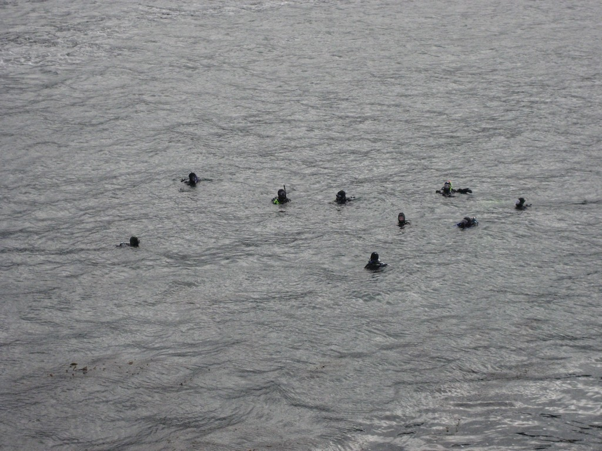

Monterey & Pt. Lobos
Index
Previous
3 of 26
Next
Rating: 2
Caption: Whaler's Cove, Pt. Lobos
Keywords: Diving, Monterey
Name: Monterey 2009-01-25 11-10-07
Date: 1/25/09 11:10:07 AM PST
Aperture: ƒ/4.9
Shutter Speed: 1/1250
Exposure Bias: 0 ev
ISO: ISO 400
Focal Length: 17.4mm
Pixel Size: 2816 × 2112 (5.9 MP)
File Name: Bella 2009-01-25 11-10-07.JPG
File Size: 3.40 MB
Camera Model: Canon PowerShot SD630
Project Path: Monterey 2009-01
